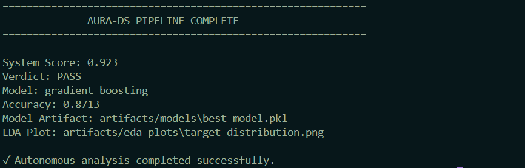

✕
SOFTWARE · AI/ML · DATA ANALYTICS
 Nooh Khan
Nooh Khan
Computer Science Engineer
Computer Science undergraduate building production-ready systems — from distributed Python microservices and 10-layer digital twins to AI agents and retail Power BI analytics dashboards.
01 / About Me
Combining computer science fundamentals with hands-on systems reliability, machine learning, and data analytics.
I am a Computer Science & Engineering undergraduate at Allenhouse Institute of Technology, Kanpur. My engineering journey centers on building software that remains correct, performant, and deployable after initial development.
Over the past year, I have engineered an Enterprise Digital Twin & Decision Intelligence Platform built additively across 12 weeks, developed distributed Event-Driven Order Orchestrators using FastAPI and Redis Streams, and authored Customer Analytics & Churn Risk Models in SQL and Power BI.
I have also participated in applied virtual data science experiences with BCG X and British Airways via Forage, competed in hackathons like EY Techathon 5.0, and hold industry certifications across Python, SQL, and Cloud AI.
02 / Skills & Technologies
Organized by specialization areas based on actual projects, certifications, and codebase experience.
04 / Project Journey
Projects organized in deliberate sequence along a centered timeline, alternating right and left. Click any project for detailed specs.

A production 10-layer digital twin unifying predictive forecasting, agentic reasoning, enterprise RAG, MLflow experiment tracking, and Kubernetes deployment.

Cleaned retail transactional dataset in Python, executed SQL analytical queries, and surfaced dynamic customer spend metrics in interactive Power BI dashboards.
High-concurrency order placement backend implementing the Saga Pattern, non-blocking Asyncio loops, Redis Streams, RabbitMQ, and transactional consistency.
An AI agent system that autonomously ingests tabular datasets, generates analytical hypotheses, executes automated EDA code, and trains machine learning models.
FastAPI microservice middleware connecting frontends with AWS Bedrock foundation models using Server-Sent Events (SSE) streaming and Pydantic validation.

A customer lifecycle analytics engine integrating RFM customer segmentation, predictive Customer Lifetime Value (CLV) modeling, and churn vulnerability scoring.
Operating system simulator modeling virtual memory pagination, dynamic heap allocators, LRU eviction, and CPU process control blocks (PCB).
05 / Specialization Hubs
Explore dedicated hub sections with in-depth projects, skills, and resume highlights for each specialization.
Retail transaction pipelines, SQL window aggregations, dynamic Power BI dashboards, DAX measures, and Customer Lifetime Value churn modeling.
Distributed microservices, event-driven Saga pattern orchestrators, FastAPI REST APIs, Redis Streams, AWS Bedrock middleware, and OS memory simulators.
10-layer Enterprise Digital Twins, Agentic reasoning loops, Vector RAG, MLflow experiment tracking, and Kubernetes MLOps deployment pipelines.
03 / Certifications
Hover to pause. Click any certification to view full document.
06 / Resume
Preview my single-page PDF résumé or download a local copy directly.
B.Tech Computer Science & Engineering candidate (Expected 2027) with hands-on technical achievements across AI/ML digital twin systems, distributed Python microservices, and retail data analytics.
07 / Let's Connect
Open to Software Engineering, AI/ML, and Data Analytics roles. Connect on any platform below.
08 / Get in Touch
I am open to Software Engineering, AI/ML, and Data Analytics roles. Send a message using the form below.
Specialization Hub — Data Analytics
Transforming complex raw transactional data into clear business insights. Specialized in Python data wrangling, SQL optimization, dynamic Power BI dashboards, and customer lifetime value modeling.
Applied exploratory data analysis, statistical modeling, and data-driven customer recommendations for business strategy challenges.
Analyzed customer satisfaction and flight operational datasets using Python, Seaborn, and Predictive Modeling techniques.
Python (Pandas, NumPy), SQL (CTEs, Window Functions), Power BI (DAX Measures, Dynamic Slicers), Jupyter, Matplotlib, Seaborn.
Cleaned and analyzed retail transaction datasets to evaluate subscription lift, promo code effectiveness, and age demographic purchase distributions in Power BI.
Engineered an RFM customer segmentation engine and predictive Customer Lifetime Value (CLV) churn model to drive targeted marketing retention campaigns.
Specialization Hub — Python Backend & Systems
Architecting distributed, asynchronous microservices and low-level system integrations. Focused on high-concurrency event-driven orchestrators, cloud LLM middleware, clean REST APIs, and database efficiency.
Expert in FastAPI, Asyncio, Pydantic v2, RESTful API design, background tasks, and non-blocking I/O event loops.
Proficient with PostgreSQL (SQLAlchemy async sessions), MongoDB, Redis Streams, and RabbitMQ message brokers.
Experienced with Docker, Docker Compose, Kubernetes manifests, Git workflows, and automated CI/CD pipelines.
Implemented an Orchestrated Saga Pattern in Python using FastAPI, Redis Streams, and RabbitMQ for distributed transaction rollback consistency with high concurrency.
Production API middleware providing Server-Sent Events (SSE) streaming token responses from AWS Bedrock foundation models with Pydantic v2 validation.
Low-level operating system simulator modeling virtual memory paging, LRU eviction algorithms, dynamic heap allocators, and process control blocks (PCB).
Specialization Hub — AI / ML / Data Science
Designing intelligent, production-ready systems. From multi-layer digital twins and agentic decision loops to vector retrieval-augmented generation (RAG) and automated MLOps pipelines.
Agentic AI, RAG (Retrieval-Augmented Generation), Scikit-Learn, TensorFlow, Time-Series Predictive Forecasting, Vector Search.
MLflow experiment tracking, model registry management, data drift monitoring, automated CI quality gates, and Docker/Kubernetes deployment.
Designed and shipped a 10-layer Enterprise Digital Twin & Decision Intelligence Platform additively over 12 weeks with zero regressions.
A flagship 10-layer platform unifying state streaming, predictive forecasting, agentic workflows, enterprise RAG, MLflow experiment tracking, and Kubernetes deployment.
An intelligent agent system that autonomously ingests tabular datasets, generates analytical hypotheses, executes automated EDA, selects optimal ML models, and drafts executive reports.